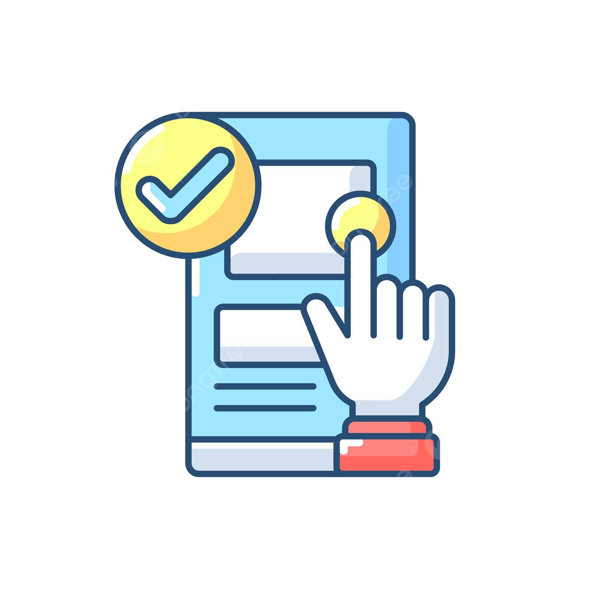

¿Qué es Usabilidad Web?
La accesibilidad web se enfoca en hacer que los sitios web sean fáciles de usar para todos, especialmente para aquellos con alguna discapacidad. Esto incluye la programación, el diseño y la tecnología para que con debilidad visual, fotosensibilidad, problemas auditivos, cognitivas o incluso condiciones sociales como el analfabetismo , puedan navegar, entender,aprender e interactuar con la menor dificultad posible. De la misma manera que se diseñanedificios y productos para personas con movilidad reducida, también es esencial que Internet sea accesible para todos.
Importancia de la Usabilidad Web

La accesibilidad web es crucial porque aproximadamente el 15% de la población mundial vive con alguna discapacidad. Esto resalta la importancia de diseñar sitios que satisfagan sus necesidades físicas y cognitivas. Además, la accesibilidad web ofrece varios beneficios:
- Facilita la vida diaria al permitir que las personas accedan a información, utilicen aplicaciones y herramientas en línea de manera más rápida y sencilla.
- Fomenta la inclusión digital, ayudando a que más personas con discapacidad utilicen Internet y participen en el entorno digital.
- Amplía el alcance de una marca, ya que hacer sitios accesibles permite llegar a un público que antes no se tenía en cuenta.
- Abre nuevas oportunidades comerciales, ya que estos nuevos grupos de usuarios pueden convertirse en clientes potenciales de tu organización.
Principios de Usabilidad Web
La accesibilidad web tiene como objetivo hacer que cualquier página y su contenido sean fáciles de usar y entender para todos los visitantes. Sus mejoras van más allá de una experiencia de usuario típica. Aquí se destacan los principios básicos de la accesibilidad web:
- Perceptibilidad: El contenido debe ser claro y comprensible para todos, con alternativas para quienes tienen dificultades visuales o auditivas.
- Operabilidad: Los usuarios deben poder controlar la experiencia digital a su gusto, evitando avances automáticos y elementos que puedan ser molestos.
- Comprensión: El contenido debe ser fácil de entender para todos los usuarios, evitando lenguaje complicado y proporcionando apoyo visual cuando sea necesario.
- Robustez: Los productos digitales deben funcionar en diferentes dispositivos y ser compatibles con herramientas de asistencia populares.
| Principios | Ejemplos |
|---|---|
| Perceptibilidad | En un sitio web, las imágenes deben tener descripciones claras para las personas con discapacidad visual, como "Foto de un perro jugando en el parque". |
| Operabilidad | Un reproductor de video en línea debe permitir a los usuarios pausar y reproducir el video según su conveniencia |
| Comprensión | Un manual en línea sobre cómo usar un dispositivo debe usar un lenguaje simple y claras instrucciones |
| Robustez | Un formulario de registro en línea debe ser compatible con lectores de pantalla para personas con discapacidad visual. |